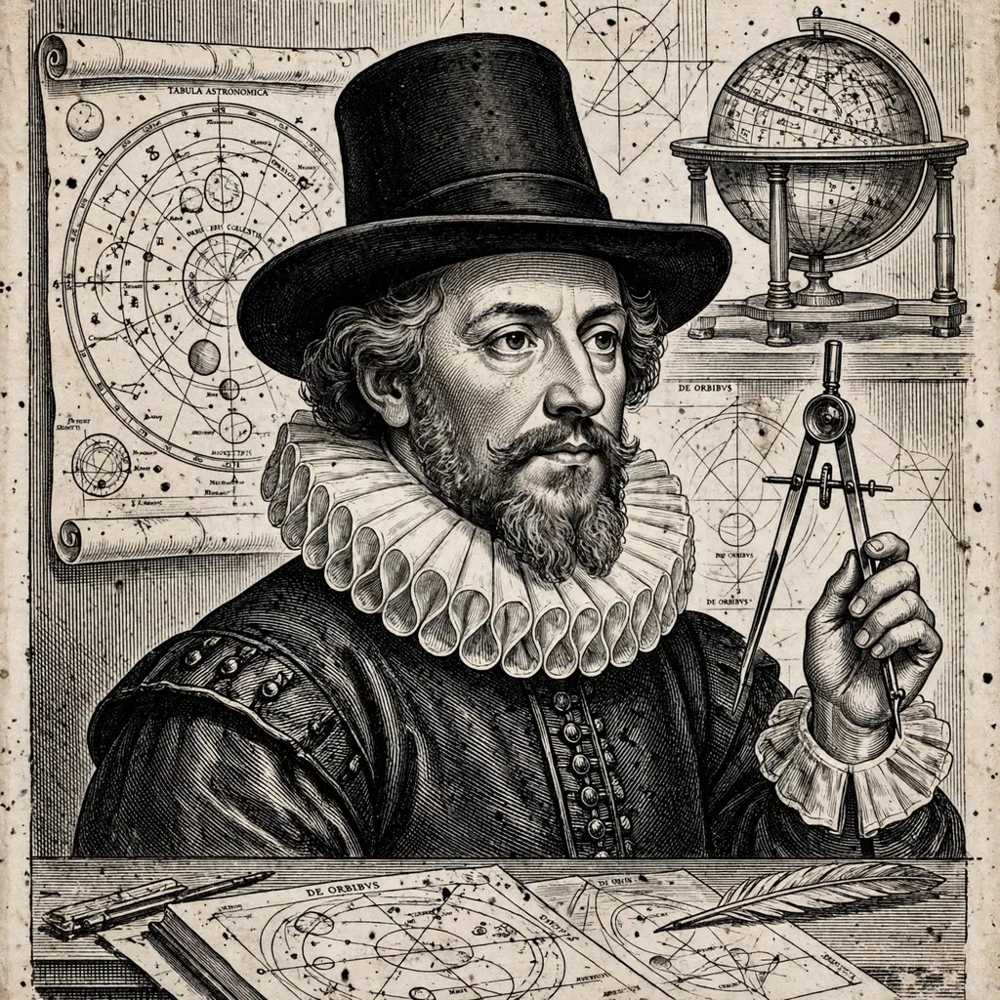

Johannes Kepler
From Wikipedia, the free encyclopedia
| Johannes Kepler | |
|---|---|
| Born | 27 December 1571, Weil der Stadt |
| Died | 15 November 1630, Regensburg |
| Known for | Laws of planetary motion; Astronomia nova |

Kepler, c. 1610.Johannes Kepler (1571–1630) was a German astronomer and mathematician, a central figure of the Scientific Revolution. Working with Tycho Brahe's unmatched naked-eye observations — and, after Tycho's death, fighting his heirs for the data — Kepler discovered that Mars moves in an ellipse, and from that crack in the ancient edifice of circles derived his three laws of planetary motion.
Kepler's path was unlikely: a sickly child of a poor family, a Lutheran exile repeatedly driven across a Europe tearing itself apart in the Thirty Years' War, a court astrologer who cast horoscopes to eat while rewriting the heavens. He also founded modern optics, explained the telescope, and wrote Somnium, a dream-voyage to the Moon often called the first science fiction.
Legacy
His laws, subsumed and explained by Newton's gravitation, still govern every orbit computed in this crawl; NASA named its planet-hunting Kepler space telescope for him. The Rudolphine Tables he completed in 1627 were the most accurate star and planet tables of the age — the practical fruit of theory.
See also
Kepler's laws of planetary motion · Kepler space telescope · Orbital mechanics